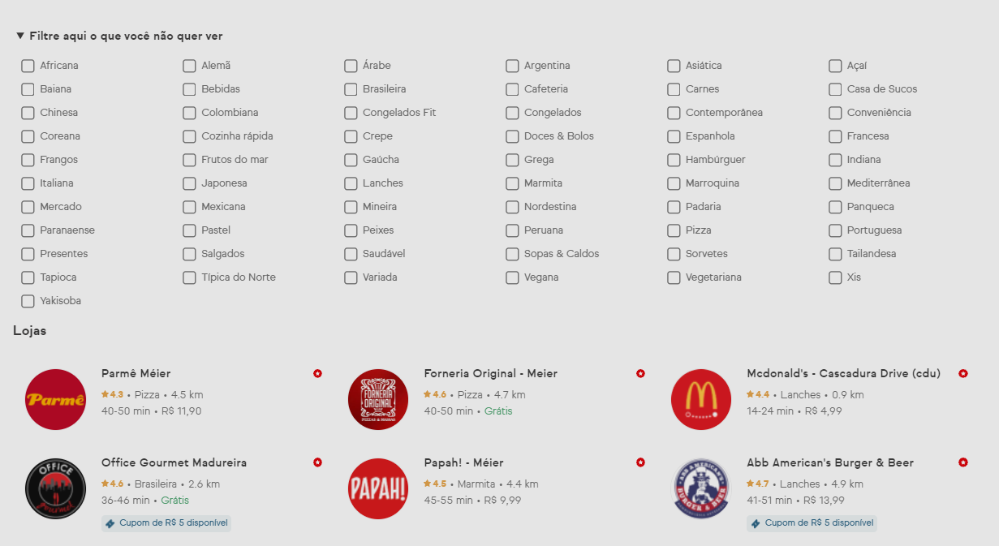
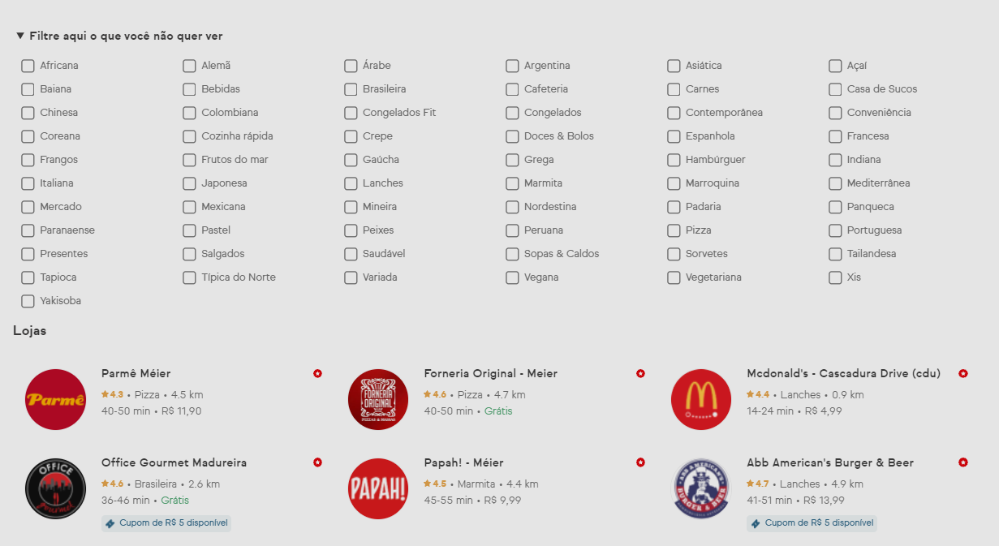

Olá! Esta extensão ainda está desenvolvimento.
Atualmente existem os seguintes filtros disponíveis:
-
Filtro para esconder categorias específicas
Pode ser encontrado acima da opções de restaurantes

Pode ser encontrado acima da opções de restaurantes
